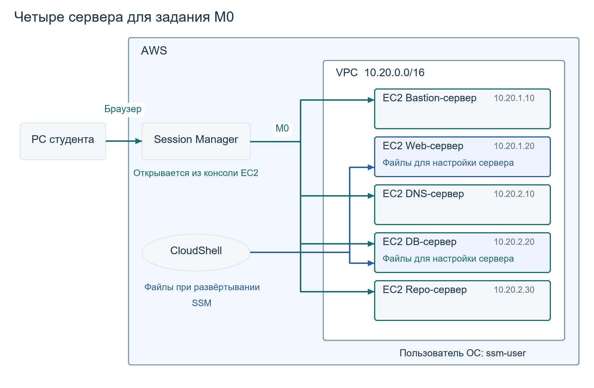

M0 Своя среда и место выполнения команд (4)
Практика P0–P6 · Задания M0–M6
Связанное задание: P0.
Требуемый результат
Воспользуйтесь способом подключения из P0 и откройте Session Manager для четырёх серверов. В списке EC2 нажмите Instance ID нужного сервера, затем стрелку справа от Connect и Connect with SSM Session Manager. На каждом сервере войдите как ssm-user и создайте в своём домашнем каталоге файл m0-connection.txt с одной строкой из таблицы.
| Сервер | Окончание имени в EC2 | Содержимое файла |
|---|---|---|
| Сервер БД | -db |
db |
| DNS-сервер | -dns |
dns |
| Сервер пакетов | -repo |
repo |
| Сервер Bastion | -bastion |
bastion |
Выберите M0 на странице заданий. За каждый верный файл начисляется 1 балл, всего можно получить 4 балла.
Подключение к серверам и размещение файлов для настройки

Зелёные стрелки указывают на четыре сервера для подключения через Session Manager и создания файла. Синие стрелки показывают размещение файлов при создании среды.

Список Instances в EC2. Для P0 выберите строку с окончанием имени -web, для M0 - -db, -dns, -repo и -bastion по очереди.

Страница EC2. Нажмите стрелку справа от Connect и выберите Connect with SSM Session Manager. На снимке показан Web-сервер.
Проверка и отправка
- Откройте страницу заданий, которую использовали в P0. Войдите через учебный аккаунт Google и выберите свой Lab и M0.
- Запустите проверку выбранного задания.
- Во время обработки обновляйте результат. Сверьте ID задания, время, каждый check и сохранение. Результат сохраняется автоматически; оценки M доступны в разделе сохранённых оценок.